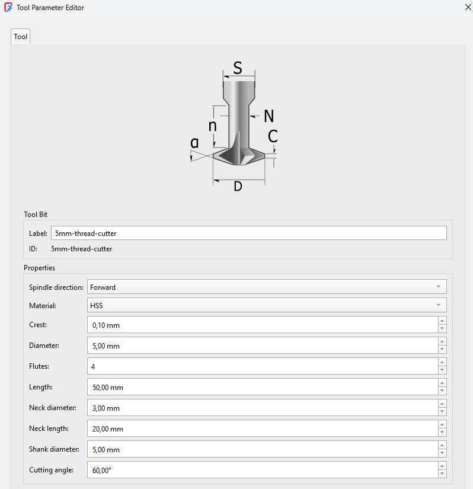
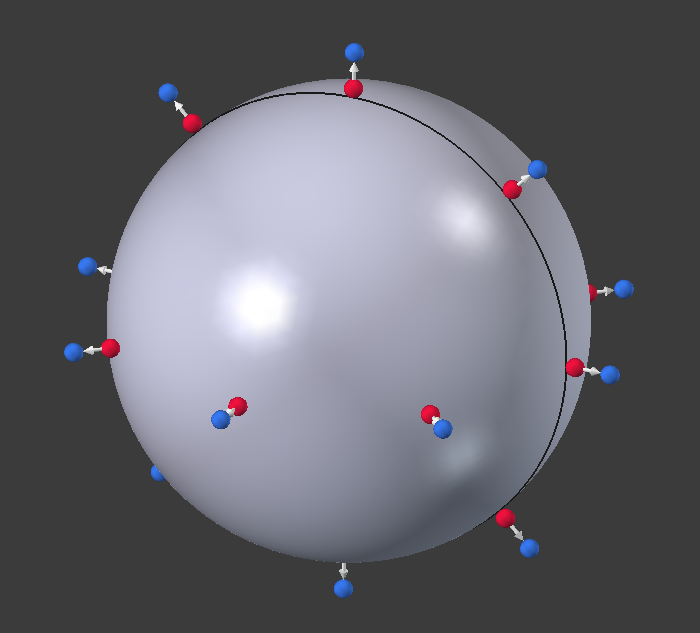
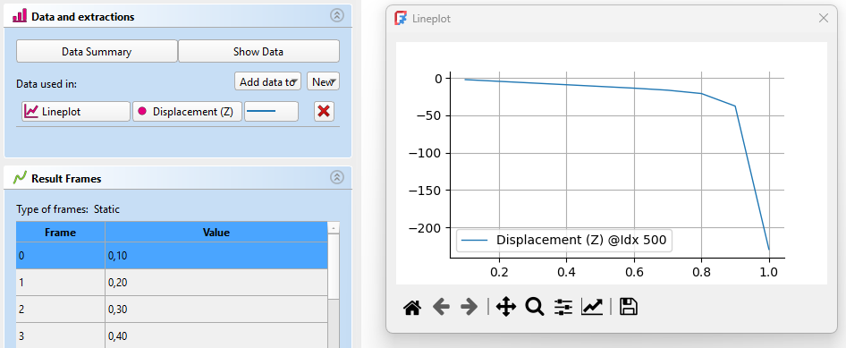

Release notes 1.1/pl
FreeCAD 1.1 jest w trakcie rozwoju, nie ma jeszcze oczekiwanej daty wydania.
Czy brakuje jakichś funkcji? Wspomnij o nich w wątku na forum Informacje o wydaniu v1.1.
Więcej informacji na temat sposobów przyczyniania się do rozwoju programu FreeCAD można znaleźć na stronie Pomóż w rozwoju FreeCAD.Wszystkie obrazy na tej stronie muszą używać przyrostka _relnotes_1.1.
FreeCAD 1.1 zostanie wydany w roku ..., pobranie będzie możliwe ze strony Pobieranie programu. Ta strona jest podsumowaniem najciekawszych zmian i funkcji.
Starsze uwagi na temat wydania FreeCAD można znaleźć na stronie Lista funkcji.
Miejsce na przyciągający wzrok obrazek wybrany przez adminów z galerii pokazowej użytkowników.
Ogólne
- Usprawnione wsparcie dla Wayland. Pull request #21917, Pull request #23768 oraz Pull request #23946
Interfejs użytkownika

|
Dodano trzypunktowe oświetlenie aby usprawnić renderowanie modeli 3D. |

|
Pasek wyszukiwania został dodany do |

|
Dodany został nowy Edytor motywów i system tokenów motywów dla lepszego dostosowywania stylów interfejsu. |

|
Połączone i usprawnione okno dialogowe Dodaj właściwość, które wspiera wyrażenia, wyliczenia i jednostki. Ulepszony Edytor wyrażeń z lepszym uzupełnianiem zakładek, zachowaniem przy zmianie rozmiaru i wprowadzaniem Zestawów zmiennych. Pull request #22719, Pull request #23426, Pull request #22964 oraz Pull request #22944. |
Pozostałe ulepszenia interfejsu użytkownika
- Dodano domyślny skrót dla
 Preferencji. Pull request #15536
Preferencji. Pull request #15536 - Usprawniono stronę preferencji obszaru powiadomień. Pull request #15207
- Do narzędzia
 Pomiary dodano opcje automatycznego zapisu i wskazywania dodającego. Pull request #17717
Pomiary dodano opcje automatycznego zapisu i wskazywania dodającego. Pull request #17717 - Dodano parametr dostrajania ToggleTransparency aby umożliwić użytkownikom zmianę domyślnego poziomu przezroczystości aktywowanego przez narzędzie
 Włącz / wyłącz przezroczystość. Pull request #18986
Włącz / wyłącz przezroczystość. Pull request #18986 - Dodana została właściwość widoku Show Plane, aby wyświetlać płaszczyznę, na której oparty jest obiekt 2D. Pull request #18910
- Możliwa jest teraz zmiana koloru osi układu współrzędnych przy pomocy nowych preferencji na stronie Edycja → Preferencje → Wyświetlanie → Widok 3D. Pull request #16995
- Dodana została właściwość widoku Show Placement, aby wyświetlać umiejscowienie jako układ współrzędnych w punkcie początkowym obiektu. Pull request #19671
- Dodany został styl nawigacji SolidWorks. Pull request #19568
- Animacje kostki nawigacyjnej 3D akumulują obrót w zależności od tego, jak często klika się na płaskich przyciskach. Pull request #19719
- Dodane zostały nowe style obrotu Trackball Classic i Rounded Arcball. Rounded Arcball jest teraz domyślny, oferując czysty obrót poprzez toczenie kamery gdy kursor znajduje się w pobliżu krawędzi ekranu. Pull request #20535
- Dodane zostało wsparcie dla podpowiedzi na pasku statusu. Pull request #18961
- Wszystkie właściwości logiczne w widoku właściwości używają teraz pola wyboru zamiast listy rozwijanej z wartościami prawda/fałsz. Pull request #21555
- Dodany został styl nawigacji Siemens NX. Pull request #21813
- Jeśli w widoku drzewa jest aktywny obiekt,
 Group zostanie dodana do niego podczas tworzenia. Pull request #21902
Group zostanie dodana do niego podczas tworzenia. Pull request #21902 - Polecenie
 Wyrównaj do zaznaczenia używa teraz mniejszych obrotów. Pull request #20088
Wyrównaj do zaznaczenia używa teraz mniejszych obrotów. Pull request #20088 - Polecenie Wyrównaj do zaznaczenia używa teraz najdłuższej krawędzi ściany do wyrównania poziomego lub pionowego. Pull request #20374
- Polecenie Wyrównaj do zaznaczenia teraz również wyrównuje widok kamery do zaznaczonych płaskich krzywych i niepłaskich ścian. Pull request #22066 oraz Pull request #22365
- Wszystkie okna MDI (w tym np. Arkusza Kalkulacyjnego i Rysunku Technicznego) można teraz odłączyć i ustawić na pełen ekran używając skrótów (V, U lub F11) bądź opcji Widok → Okno dokumentu w menu. Pull request #22544
- Domyślna lista środowisk pracy jest teraz krótsza, ponieważ rzadko używane środowiska pracy są domyślnie dezaktywowane. Dotyczy to środowisk Inspection, <none>, OpenSCAD, Robot oraz Test Framework. Pull request #23034
Rdzeń i API
Rdzeń programu

|
 Kliknij na obrazku jeśli animacja nie uruchamia się automatycznie. |
Narzędzie |
 Kliknij na obrazku jeśli animacja się nie uruchamia. |
Do opcji Przenieś do innego obiektu narzędzia |
 Kliknij na obrazku jeśli animacja się nie uruchamia. |
Szybki pomiar wyświetla na pasku statusu więcej informacji w zależności od wskazanych elementów. Poza długością, kątem, polem powierzchni i promieniem, wyświetla teraz również średnicę zamkniętych elementów okrągłych i odległość osi. Działa to dla pojedynczych i wielu wskazanych elementów. Jest również dostępna opcja w menu do wyłączenia szybkiego pomiaru. |

|
Jeśli otwarty jest |

|
Płaszczyzny początkowe są teraz powiększane po najechaniu na nie kursorem. Dodane zostało też nowe ustawienie Rozmiar obiektów konstrukcyjnych do kontrolowania rozmiaru obiektów konstrukcyjnych. |
 Kliknij na obrazku jeśli animacja się nie uruchamia. |
Dodane zostało narzędzie Clarify Selection oparte o narzędzie Pick Geometry autorstwa Realthunder'a. Można je aktywować skrótem klawiaturowym G, G, opcją w menu kontekstowym lub (w zależności od wybranego stylu nawigacji) przez przytrzymanie lewego przycisku myszy. Włącza tymczasową przezroczystość i wyświetla listę wszystkich pobliskich obiektów geometrycznych różnych typów (Obiekt, Ściana, Krawędź, Wierzchołek, Inne), aby umożliwić wybór ukrytych/wewnętrznych obiektów podczas najeżdżania kursorem na model w widoku 3D. |
Pozostałe ulepszenia rdzenia
- Do wyrażeń dodane zostało wsparcie dla operacji logicznych. Pull request #22506
- Struktury domyślnych danych użytkownika i ścieżki konfiguracji zmieniły się, aby uwzględniać numer wersji programu FreeCAD. To sprawia, że aktualizacja jest mniej ryzykowna i umożliwia bezpieczne korzystanie ze starszych wersji FreeCAD razem z nowymi. Przy uruchamianiu pojawia się teraz opcja migracji starszych konfiguracji do nowej wersjonowanej struktury jeśli poprzednia wersja zostanie wykryta w systemie. Pull request #23321
- Dodana została zmiana nazw właściwości dynamicznych. Pull request #21444, Pull request #21975 oraz Pull request #21976.
API
Usunięte API Pythona
Zmienione API Phytona
Nowe API Pythona
- Nowa statyczna klasa
FreeCAD.ApplicationDirectoriesjest dostępna zapewniając narzędzia związane z nową wersjonowaną strukturą ścieżek.
Środowisko pracy Start
- Strona startowa może teraz wyświetlać zawartość dodatkowych folderów określonych przez użytkownika. Ich ścieżki powinny być rozdzielone podwójnymi średnikami (
;;). Pull request #19473, Pull request #19918 i Pull request #19948. - Sekcja Przykłady na stronie startowej może być ukryta za pomocą ustawienia w preferencjach. Pull request #19376 i Pull request #19918.
- Podglądy dla większej liczby formatów modeli 3D (takich jak STEP i STL) są teraz wyświetlane w sekcjach Ostatnie pliki i Przykłady na stronie startowej jeśli przeglądarka F3D jest zainstalowana i dodana do zmiennej systemowej PATH. Pull request #19489
Menadżer dodatków
- Narzędzie do aktualizowania zależności Pythona działa teraz poprawnie gdy FreeCAD jest zainstalowany jako pakiet snap lub AppImage. Pull request #19384, Pull request #19766 i Pull request #19814.
- Ścieżka instalacji modułów Pythona w narzędziu do aktualizowania zależności jest teraz pokazana jako bezwzględna ścieżka dla większej czytelności. Jest też pokazana poprawnie zgodnie z metodą instalacji programu FreeCAD. Pull request #19828 i Pull request #19816.
- Sam Menedżer dodatków jest teraz dodatkiem i można go aktualizować przechodząc na jego stronę na liście dodatków w Menedżerze.
- Dodatki mogą teraz jawnie deklarować swoje wsparcie dla konkretnych wersji programu FreeCAD i dodano wsparcie dla wielu wersji i gałęzi każdego dodatku.
- Zależności Pythona używają teraz pliku pip-constraints, aby zapewnić bezkonfliktową instalację.
Środowisko pracy Złożenie
- Dodane zostało narzędzie
 Wstaw nową część umożliwiające łatwe dodawanie nowych części do złożenia. Pull request #17922
Wstaw nową część umożliwiające łatwe dodawanie nowych części do złożenia. Pull request #17922 - Dodane zostało narzędzie
 Utwórz symulację umożliwiające dodawanie ruchów do połączeń i tworzenie animacji. Pull request #16414
Utwórz symulację umożliwiające dodawanie ruchów do połączeń i tworzenie animacji. Pull request #16414 - Polecenie
 Zestawienie materiałów (BOM) może teraz wyświetlać wartości podanych właściwości. Pull request #20732
Zestawienie materiałów (BOM) może teraz wyświetlać wartości podanych właściwości. Pull request #20732
Pozostałe ulepszenia środowiska Złożenie
- Nowe globalne geometrie konstrukcyjne można wykorzystywać do dołączania połączeń aby składać części. Pull request #18332
Środowisko pracy BIM

|
Do narzędzia |
Pozostałe ulepszenia środowiska BIM
- Panel
 Widoków BIM został przebudowany i ma teraz również sekcję dla wszystkich widoków 2D. Pull request #15836
Widoków BIM został przebudowany i ma teraz również sekcję dla wszystkich widoków 2D. Pull request #15836 - Panel Widoki zyskał funkcję aktywacji i deaktywacji dla obiektów w sekcji przestrzennej dekompozycji. Pull request #15836 oraz Pull request #21570
- Wsparcie NativeIFC dla obiektów 2D zostało dodane do środowiska pracy BIM, pozwalając na osadzanie obiektów 2D (linii, tekstów, wymiarów) wewnątrz plików IFC, jak również otwieranie takich plików z innych programów BIM. Pull request #16629
- Okno dialogowe narzędzia
 Obmiar zyskało wsparcie dla prostych szyków (nieosadzonych). To umożliwia przetwarzanie szyków standardowych i opartych o łącza do dalszych obliczeń w raporcie Obmiaru BIM. Pull request #19219
Obmiar zyskało wsparcie dla prostych szyków (nieosadzonych). To umożliwia przetwarzanie szyków standardowych i opartych o łącza do dalszych obliczeń w raporcie Obmiaru BIM. Pull request #19219 - Opcja Kontynuuj jest teraz przechowywana osobno dla każdego polecenia środowisk pracy Rysunek Roboczy i BIM. Pull request #20748
- Przy dodawaniu widoków BIM do strony środowiska Rysunek Techniczny, dostosowują się one teraz do skali strony żeby miały sensowny rozmiar. Pull request #20935
- Domyślny poziom przybliżenia dla nowych projektów BIM został zmieniony, aby był bardziej adekwatny do wartości używanych w modelach architektonicznych. Pull request #20271
- Przy tworzeniu nowego
 Piętra, wybrane obiekty w widoku drzewa są teraz uwzględnione w kondygnacji. Pull request #20180
Piętra, wybrane obiekty w widoku drzewa są teraz uwzględnione w kondygnacji. Pull request #20180  Przestrzenie można teraz tworzyć z pojedynczych obiektów (np. wewnętrznych powierzchni ściany opartej o prostokątną podstawę). Pull request #20158
Przestrzenie można teraz tworzyć z pojedynczych obiektów (np. wewnętrznych powierzchni ściany opartej o prostokątną podstawę). Pull request #20158- Standardowe grupy FreeCAD mogą być teraz ignorowane podczas eksportu modelu do IFC. Kontroluje to nowe domyślne ustawienie. Pull request #21583
- Nowy parameter Sill został dodany do obiektów
 Drzwi i
Drzwi i  Okien, aby umożliwić parametryczną zmianę wysokości progu/parapetu. Pull request #21005
Okien, aby umożliwić parametryczną zmianę wysokości progu/parapetu. Pull request #21005 - Dodano opcję wstępnego ładowania wszystkich IfcTypes podczas importu/otwierania plików IFC. Pull request #21450
- Polecenie
 Płaszczyzna przekroju otrzymało liczne poprawki i ulepszenia w zakresie użyteczności. Najważniejsza z nich to naprawienie problemu, w którym obrót płaszczyzny przekroju odwracał kierunek cięcia, oraz dodanie możliwości przełączania opcji CutView z poziomu panelu zadań. Pull request #23826
Płaszczyzna przekroju otrzymało liczne poprawki i ulepszenia w zakresie użyteczności. Najważniejsza z nich to naprawienie problemu, w którym obrót płaszczyzny przekroju odwracał kierunek cięcia, oraz dodanie możliwości przełączania opcji CutView z poziomu panelu zadań. Pull request #23826 - Podwójne kliknięcie obiektu BIM, który obsługuje edycję, otwiera teraz jego panel zadań zamiast edycji etykiety. Pull request #23805, Pull request #23796 oraz Pull request #24712
- Polecenie
 Usuń może teraz usuwać okna i drzwi ze ścian. Pull request #21561
Usuń może teraz usuwać okna i drzwi ze ścian. Pull request #21561 - Podczas tworzenia niestandardowego okna, głębokość ramy okna i powiązane właściwości są teraz jednoznacznie przedstawiane użytkownikowi. Pull request #21486
- Podczas eksportu modeli zawierających dach, dach nie jest już usuwany z eksportu. Pull request #21409
- Podwójne kliknięcie Poziomu powoduje teraz jego aktywację oraz aktywację jego płaszczyzny roboczej domyślnie. Pull request #21159
- Dodano skrót W, P do wyboru płaszczyzny roboczej. Pull request #21157
- Dodano obsługę krzywych złożonych dla konstrukcji, takich jak
 Płyta. Pull request #21134
Płyta. Pull request #21134 - Podczas tworzenia
 Ściany można dodatkowo wprowadzić wartość właściwości DANEOdsunięcie. Pull request #21042
Ściany można dodatkowo wprowadzić wartość właściwości DANEOdsunięcie. Pull request #21042 - Polecenia tworzenia widoku 2D zostały pogrupowane w celu poprawy użyteczności. Pull request #20941
Środowisko pracy CAM
|  | Zarządzanie narzędziami w środowisku pracy CAM zostało zastąpione integracją dodatku Better Tool Library, wprowadzając nowy edytor i selektor narzędzi. |
{kind=link}

|
Edytor biblioteki końcówek narzędzi został zastąpiony i wspiera kopiowanie i wklejanie, a także przeciąganie i upuszczanie. |
Pozostałe ulepszenia środowiska CAM
- Eksperymentalne narzędzie
 CAM: Z kształtu zostało zastąpione narzędziem Ścieżka z kształtu z kontrolerem narzędzia, które jest znacznie ulepszoną wersją tego narzędzia opartą o makro. Pull request #21108
CAM: Z kształtu zostało zastąpione narzędziem Ścieżka z kształtu z kontrolerem narzędzia, które jest znacznie ulepszoną wersją tego narzędzia opartą o makro. Pull request #21108 - Zaimplementowane zostało adaptacyjne wykańczanie i wykrywanie nawisów, w skład czego wchodzi inteligentne rzutowanie 2.5D modelu i półfabrykatu dla wszystkich operacji adaptacyjnych, adaptacyjne wykańczanie całego modelu jednym kliknięciem, ustawienie "Z stock to leave" uzupełniające ustawienie "finishing stepdown" oraz pole umożliwiające porządkowanie cięć po głębokości lub obszarze. Pull request #18880
- Dodane zostały eksperymentalne operacje gwintowania G84/G74. Pull request #8069 oraz Pull request #24148
- Do operacji profilowania dodane zostało wsparcie dla wielu przejść. Pull request #17326
- Dodane zostało wsparcie dla postprocessorów Snapmaker, Masso i Ondsel SVG. Pull request #20154, Pull request #18845 oraz Pull request #21743
 Nowy symulator został usprawniony, w tym pojawiły się dwa dodatkowe przyciski do resetowania kamery i zmniejszania prędkości animacji. Pull request #21288, Pull request #21222 i inne
Nowy symulator został usprawniony, w tym pojawiły się dwa dodatkowe przyciski do resetowania kamery i zmniejszania prędkości animacji. Pull request #21288, Pull request #21222 i inne- Operacja Szyk jest od teraz uznawana za przestarzałą, ponieważ jest obecnie również zaimplementowana jako operacja wykańczająca. Pull request #20321
- Zaimplementowane zostało wsparcie dla wieloprzejściowych operacji profilowania. Pull request #17326
- Funkcjonalność LeadInOut została usprawniona. Pull request #22669
- Dodane zostały elementy interfejsu użytkownika umożliwiające przeglądanie i edytowanie parametrów kontrolera narzędzi z poziomu panelu zadań operacji. Pull request #23180
Środowisko pracy Rysunek Roboczy
- Obiekty z dwiema strzałkami mogą teraz mieć różne strzałki początkowe i końcowe. Rozmiar strzałek początkowych i końcowych obiektu też może być różny. Pull request #11941
- Narzędzie
 Edycja może teraz działać również na Etykietach. Pull request #13445
Edycja może teraz działać również na Etykietach. Pull request #13445 - Do narzędzia
 Kształt z tekstu i
Kształt z tekstu i  kreskowań dodane zostało wsparcie dla względnych ścieżek plików. Pull request #17819 oraz Pull request #23294
kreskowań dodane zostało wsparcie dla względnych ścieżek plików. Pull request #17819 oraz Pull request #23294 - Obsługa Łączy w narzędziu Rysunek Techniczny: Wstaw obiekt środowiska Rysunek Roboczy została naprawiona. Pull request #18175 i Pull request #19296
- Tryb wyciągnięcia narzędzia
 Przytnij bierze teraz pod uwagę Łącza. Może już działać na ścianach należących do Łączy i obiektach w kontenerach z zastosowanymi Łączami. Ponadto, punkt definiujący wyciągnięcie może być współpłaszczyznowy ze ścianą. Pull request #18314 i Pull request #18320
Przytnij bierze teraz pod uwagę Łącza. Może już działać na ścianach należących do Łączy i obiektach w kontenerach z zastosowanymi Łączami. Ponadto, punkt definiujący wyciągnięcie może być współpłaszczyznowy ze ścianą. Pull request #18314 i Pull request #18320 - Narzędzia Przesuń, Obróć i Skaluj również biorą teraz pod uwagę Łącza. Pull request #18795
- Jeśli Łącznik kształtu oparty na połączonych ścianach jest wyciągany, następuje próba zamknięcia jego narożników. Właściwość Sew obiektu musi być ustawiona na
Prawdaw tym celu. Miej na uwadze, że ten algorytm może nie działać dla skomplikowanych kształtów. Pull request #18901  Szyki po ścieżce zostały wzbogacone o kilka nowych właściwości. Możliwe jest teraz odwrócenie szyku, określenie stałej jednostki rozstawu i użycie wzorów rozstawu. Pull request #19017
Szyki po ścieżce zostały wzbogacone o kilka nowych właściwości. Możliwe jest teraz odwrócenie szyku, określenie stałej jednostki rozstawu i użycie wzorów rozstawu. Pull request #19017- Obiekty w warstwach mogą teraz mieć nadpisania. Pull request #19207
- Dodane zostało polecenie
 Dodaj do warstwy, aby szybko umieszczać obiekty w odpowiednich warstwach. Pull request #19427
Dodaj do warstwy, aby szybko umieszczać obiekty w odpowiednich warstwach. Pull request #19427 - Kod środowiska pracy Rysunek Techniczny, na którym polega narzędzie Rysunek Roboczy: Kreskowanie został zmodyfikowany aby również obsługiwać linie przerywane we wzorach kreskowania. Pull request #19458
- Narzędzia Rozbij kształt i Ulepsz kształt zostały zaktualizowane. Szyki mogą być rozbijane a nowe obiekty są umieszczane w tym samym kontenerze (Grupa, Część) co oryginalne obiekty i również otrzymują wizualne właściwości oryginalnych obiektów. Pull request #19487 i Pull request #19685
- Narzędzie
 Wielokąt foremny pokazuje teraz podgląd wielokąta zamiast okręgu. Pull request #21045
Wielokąt foremny pokazuje teraz podgląd wielokąta zamiast okręgu. Pull request #21045 - Pole Align to face zostało dodane do panelu zadań narzędzia Kreskowanie. Pull request #21332
- Dodany został skrót D działający podczas korzystania z narzędzi i umożliwiający ponowne wyśrodkowanie płaszczyzny roboczej. Pull request #19728
- Aby ułatwić wprowadzanie parametrów przez użytkownika dla szyków używających pojedynczej osi, do panelu zadań narzędzi
 Szyk ortogonalny dodana została opcja linear mode. Pull request #21602
Szyk ortogonalny dodana została opcja linear mode. Pull request #21602 - Wskazówki na pasku statusu zostały dodane do narzędzi do kreślenia. Pull request #23244
Pozostałe ulepszenia środowiska Rysunek Roboczy
- Polecenie Rysunek Roboczy: Zaokrąglenie działa teraz na wskazanych krawędziach zamiast na pierwszej krawędzi wskazanych obiektów. Pull request #17945 oraz Pull request #18150
- Narzędzia Grupowanie automatyczne i Dodaj do grupy zostały ulepszone. Menu obu poleceń są sortowane alfabetycznie. W menu polecenia Grupowanie automatyczne warstwy są oddzielone od grup a opcja Nowa warstwa pyta o nazwę i aktywuje warstwę. Akcje obu poleceń można teraz cofnąć. Pull request #18172 i Pull request #19312
- Położenie pola Mnożnik skali w interfejsie zostało ulepszone (Ustaw styl, Edytor stylu opisu i Rysunek Roboczy: Ustawienia). Pull request #18299
- Narzędzie Rysunek roboczy do szkicu teraz nadaje również wiązania zbieżności między krawędziami z różnych obiektów źródłowych. Pull request #18805
- Promień, sfazowanie i tryby usunięcia narzędzia Zaokrąglenie są przechowywane. Pull request #19067
- Opcja edycji została dodana do Klonów środowiska Rysunek Roboczy. Po dwukrotnym kliknięciu na nich w Widoku drzewa ich skalę można zmienić w panelu zadań. Pull request #19477
- Dla narzędzia Wybór płaszczyzny roboczej można teraz wskazać płaską ścianę i krawędź. Pull request #19728
- Dla czytelności, pole Wypełnione w panelu zadań np. Polilinii zostało przemianowane na Utwórz ścianę. Pull request #19738
- Teksty nowo utworzonych wymiarów są teraz orientowane automatycznie względem bieżącej płaszczyzny roboczej. Dostępny jest parametr dostrajania umożliwiający wyłączenie tego zachowania. Pull request #20072
- Przyciąganie do najbliższego nie ma już pierwszeństwa nad innymi rodzajami przyciągania. Przyciągania na obiekt, takie jak do punktu środkowego i do punktu końcowego w zakresie przyciągania kursora są teraz wykrywane Pull request #20118
- Do Preferencji środowiska Rysunek Roboczy dodana została lista rozwijana pozwalająca na wybór nazwy czcionki dla tekstów, wymiarów i etykiet. Dotychczas nazwę należało wprowadzać ręcznie. Pull request #20400
- Opcja Kontynuuj jest teraz przechowywana osobno dla każdego polecenia środowisk pracy Rysunek Roboczy i BIM. Dla polecenia Rysunek Roboczy: Wymiar, stara opcja Kontynuuj została przemianowana na Tryb łańcuchowy dla czytelności i dodana została nowa opcja Kontynuuj. Pull request #20748
- Narzędzie Kształt z tekstu otrzymało kilka usprawnień. Plik czcionki nie jest już preferencją, zamiast tego przechowywany jest ostatnio wybrany plik. Dla początkowej wartości pliku czcionki podejmowana jest próba znalezienia odpowiedniego pliku w systemie operacyjnym. Ma to przede wszystkim pomóc użytkownikom, którzy nie znają lokalizacji plików czcionek. Ostatnio wprowadzony tekst i wysokość również są przechowywane. Opcja Global została dodana do panelu zadań. Odznaczenie tego pola powoduje, że współrzędne mogą być wprowadzone w układzie współrzędnych płaszczyzny roboczej. Wreszcie, również pliki czcionek TrueType Collection (.ttc) mogą teraz być wybrane, ale można użyć tylko pierwszej czcionki w takim pliku. Pull request #21004, Pull request #21054 i Pull request #21124
- Obiekt bazowy dla Polilinii, Krzywej złożonej i Krzywej Béziera został zmieniony na obiekt Part::FeaturePython. Pull request #21636
- Przyciąganie do przecięcia teraz wykrywa również przecięcia między ścianami a krawędziami. Pull request #23352
- Opcja Orientacja płaszczyzny roboczej została usunięta z polecenia Skaluj, ponieważ nie działała prawidłowo. Pull request #23716
Środowisko pracy MES

|
Dodane zostało menu kontekstowe umożliwiające wybór właściwej bryły jeśli wskazana ściana obiektu CompSolid (BryłaZłożona) należy do dwóch brył. To ułatwia wybór wewnętrznych brył np. w celu przypisania do nich materiałów. |

|
Właściwość ZRefine została dodana do |
 Kliknij na obrazku jeśli animacja się nie uruchamia. |

|
Dodane zostało wsparcie dla |
|  |
{kind=link}

|

|
Dodany został |

|
Dodany został |

|
Analizy elektrostatyczne (również 2D) są teraz wspierane z przebudowanym |
|  | Zestaw narzędzi do ekstrakcji danych został dodany do obiektów prezentacji graficznej wyników. |
{kind=link}

|
Obciążenia ciśnieniem i strumieniem ciepła, jak i wiązania tie oraz kontakt można teraz zadawać na krawędzie w analizach 2D z solverem CalculiX. Podobnie, objętościowe źródła ciepła i obciążenia siłą odśrodkową można zadawać na ściany w modelach 2D. |
Pozostałe ulepszenia środowiska MES
- Szczegółowość logów i liczbę rdzeni do generowania siatki można teraz ustawić dla
 Gmsh i
Gmsh i  Netgen w Preferencjach. Pull request #17699 i Pull request #18608
Netgen w Preferencjach. Pull request #17699 i Pull request #18608 - Właściwość DANESecond Order Linear i wsparcie dla
 lokalnego zagęszczenia siatki, wcześniej dostępne tylko dla Gmsh, są teraz również dostępne dla nowej implementacji Netgen. Pull request #17170
lokalnego zagęszczenia siatki, wcześniej dostępne tylko dla Gmsh, są teraz również dostępne dla nowej implementacji Netgen. Pull request #17170 - Dodany został
 przekrój skrzynkowy i eliptyczny dla belek. Pull request #15843
przekrój skrzynkowy i eliptyczny dla belek. Pull request #15843 - Narzędzie
 Usuń wyniki usuwa teraz wszystkie obiekty wyników, nie tylko te natywne dla solvera CalculiX. Pull request #18328
Usuń wyniki usuwa teraz wszystkie obiekty wyników, nie tylko te natywne dla solvera CalculiX. Pull request #18328  Wiązanie tie można teraz stosować na powierzchnie powłok. Pull request #18325
Wiązanie tie można teraz stosować na powierzchnie powłok. Pull request #18325- Dla solvera Elmer można teraz ustawić format wyników (binarny lub ASCII) i zapisywanie identyfikatorów geometrii, również w Preferencjach. Pull request #17972
- Do
 Filtra konturów dodana została opcja wygładzania. Pull request #18088
Filtra konturów dodana została opcja wygładzania. Pull request #18088 - Dodany został parametr BucklingAccuracy dla
 solvera CalculiX - może być konieczny do uchwycenia pierwszej wartości własnej w liniowych analizach wyboczenia. Pull request #18790
solvera CalculiX - może być konieczny do uchwycenia pierwszej wartości własnej w liniowych analizach wyboczenia. Pull request #18790 - Teraz wszystkie obiekty MES, dla których wygaszanie ma sens mogą zostać wygaszone. Wcześniej tylko warunki brzegowe i obciążenia były wygaszalne. Pull request #18636
- Siły od kontaktu są teraz zapisywane do pliku ccx_dat_file w analizach z solverem CalculiX. Pull request #18840
- Narzędzie
 Materiał zbrojony (beton) korzysta teraz z
Materiał zbrojony (beton) korzysta teraz z  nowego edytora materiałów. Pull request #18893
nowego edytora materiałów. Pull request #18893  Warunek brzegowy potencjału elektrostatycznego został rozbudowany aby wspierać również warunek brzegowy typu Neumanna, co pozwala zadawać gęstość strumienia elektrycznego. Ma on teraz również symbol. Pull request #18514 i Pull request #19011
Warunek brzegowy potencjału elektrostatycznego został rozbudowany aby wspierać również warunek brzegowy typu Neumanna, co pozwala zadawać gęstość strumienia elektrycznego. Ma on teraz również symbol. Pull request #18514 i Pull request #19011- Temperatura odniesienia dla rozszerzalności termicznej może być teraz definiowana dla
 materiału bryły w analizach termomechanicznych z CalculiX. Pull request #19285
materiału bryły w analizach termomechanicznych z CalculiX. Pull request #19285 - Dodana została funkcja Pythona Fem.frdToVTK umożliwiająca konwersję plików frd z wynikami solvera CalculiX do formatu VTK używanego przez ParaView. Pull request #19426
 Warunek brzegowy gęstości prądu został ulepszony. Ma teraz dwa tryby (Custom i Normal) oraz symbol dla trybu Normal. Pull request #19930
Warunek brzegowy gęstości prądu został ulepszony. Ma teraz dwa tryby (Custom i Normal) oraz symbol dla trybu Normal. Pull request #19930- Dodane zostały dwa nowe
 Przykłady MES - jeden dla nowo zaimplementowanego
Przykłady MES - jeden dla nowo zaimplementowanego  Równania przepływu prądu stałego (ciepło Joule'a) i jeden dla
Równania przepływu prądu stałego (ciepło Joule'a) i jeden dla  Wiązania ciała sztywnego. Pull request #20007 i Pull request #20011
Wiązania ciała sztywnego. Pull request #20007 i Pull request #20011 - Panel zadań
 Obciążenia strumieniem ciepła został ulepszony - przyciski wyboru typu strumienia zostały zastąpione listą rozwijaną. Pull request #20059
Obciążenia strumieniem ciepła został ulepszony - przyciski wyboru typu strumienia zostały zastąpione listą rozwijaną. Pull request #20059 - Panel zadań
 Warunku brzegowego magnetyzacji został ulepszony. Pull request #20055
Warunku brzegowego magnetyzacji został ulepszony. Pull request #20055 - Do okna Wybór geometrii odniesienia w panelu zadań równań solvera Elmer dodany został Tryb zaznaczania. Pull request #20053
- Dodana została funkcja Pythona renameArrays umożliwiająca zmianę nazwy wybranych pól wyników w
 obiektach prezentacji graficznej wyników. Pull request #20411
obiektach prezentacji graficznej wyników. Pull request #20411 - Dodane zostało nowe ustawienie dla solvera CalculiX o nazwie Result object. Jeśli jego pole Pipeline only jest włączone, do kontenera Analizy dodawany jest nowo przebudowany solver CalculiX gdy używa się opcji Solver CalculiX. Ma on zaktualizowany panel zadań, nie generuje
 obiektów CCX_Results (tylko obiekt prezentacji graficznej wyników jest tworzony) i będzie dalej rozwijany. Pull request #20609
obiektów CCX_Results (tylko obiekt prezentacji graficznej wyników jest tworzony) i będzie dalej rozwijany. Pull request #20609 - Do narzędzia
 Grubość powłoki dodana została właściwość Offset umożliwiająca definiowanie odsunięcia wyciągniętej powłoki od właściwej siatki. Pull request #22385
Grubość powłoki dodana została właściwość Offset umożliwiająca definiowanie odsunięcia wyciągniętej powłoki od właściwej siatki. Pull request #22385 - Dodane zostało wsparcie dla
 kontaktu termicznego z solverem CalculiX poprzez właściwości Enable Thermal Contact i Thermal Contact Conductance umożliwiające określenie przewodności cieplnej kontaktu. Pull request #22121
kontaktu termicznego z solverem CalculiX poprzez właściwości Enable Thermal Contact i Thermal Contact Conductance umożliwiające określenie przewodności cieplnej kontaktu. Pull request #22121 - Dodane zostało wsparcie dla twardego i wiązanego kontaktu z solverem CalculiX. Pull request #22513 oraz Pull request #23327
- Dodane zostało wsparcie dla promieniowania między powierzchniami z solverem CalculiX. Pull request #22593
- Dodane zostało wsparcie dla amplitud (zmienności w czasie) do większości warunków brzegowych i obciążeń mechanicznych i termicznych z CalculiX. Dostępne są nowe właściwości: Enable Amplitude oraz Amplitude Values. Pull request #22851
 Temperaturę początkową można teraz zdefiniować dla wybranego obszaru (poprzez właściwość References) w analizach z solverem CalculiX. Pull request #22864
Temperaturę początkową można teraz zdefiniować dla wybranego obszaru (poprzez właściwość References) w analizach z solverem CalculiX. Pull request #22864- Właściwość Glue została dodana do generatora siatki Netgen. Gdy jest włączona, Netgen tworzy ciągłą siatkę (ta właściwość jest odpowiednikiem właściwości Coherence Mesh generatora siatki Gmsh). Pull request #23074
- Domyślna wartość właściwości Priority równań solvera Elmera zaczyna się teraz od 255 i maleje z każdym dodanym równaniem. W ten sposób, równania są rozwiązywane w kolejności w jakiej były dodane do drzewa. Pull request #22999
- Elementy membranowe i kratownicowe solvera CalculiX są teraz wspierane i zastępują odpowiednio elementy powłokowe i belkowe, gdy nowa właściwość ExcludeBendingStiffness solvera CalculiX jest włączona. Pull request #22912 oraz Pull request #23224
- Przemieszczenia punktu referencyjnego więzu ciała sztywnego są teraz zapisywane do pliku ccx_dat_file. Pull request #23199
- Narzędzie Temperatura początkowa może być teraz również użyte do zadawania pola temperatury w kroku analizy statycznej (z opcjonalną amplitudą). Pull request #23277 oraz Pull request #23530
- Netgen można teraz instalować w standardowy sposób opisany na jego stronie pobierania i należy tylko wskazać dla FreeCAD odpowiedni plik wykonywalny w preferencjach (domyślnie używany jest plik wykonywalny Pythona wskazany w ogólnych preferencjach Pythona). Pull request #23613
- Niektóre ustawienia związane z eksportem siatek mają teraz lepsze wartości domyślne. Dokładniej, grupy węzłów są włączone dla generatora siatek Gmsh a eksport do plików INP domyślnie uwzględnia tylko elementy używane przez MES i grupy. Pull request #23553
- Właściwości solvera CalculiX są teraz pogrupowane a te związane z inkrementacją w czasie są łatwiejsze w użyciu (lepsze nazwy i wartości domyślne, łatwe przełączanie między automatyczną i bezpośrednią inkrementacją, jak również brak konieczności włączania dodatkowej właściwości do ustawienia niestandardowej inkrementacji). Pull request #23494
- Dodana została nowa właściwość Pastix Mixed Precision dla solvera CalculiX. Jest domyślnie wyłączona, więc mieszana precyzja nie jest używana przez solver macierzowy PaStiX, aby uniknąć problemów z nieprawidłowymi wynikami w niektórych analizach. Pull request #23539
- Obiekt i panel zadań
 solvera Elmer został przebudowany, podobnie do wcześniejszej przebudowy dla solvera CalculiX. Działa teraz z nową implementacją Netgena. Ponadto, możliwy jest import plików ParaView PVD. Pull request #24912
solvera Elmer został przebudowany, podobnie do wcześniejszej przebudowy dla solvera CalculiX. Działa teraz z nową implementacją Netgena. Ponadto, możliwy jest import plików ParaView PVD. Pull request #24912
Środowisko pracy Materiał
- Materiały mogą być teraz przechowywane w zewnętrznych bazach danych. Pull request #21047
Pozostałe ulepszenia środowiska Materiał
- Do bazy materiałów dodano kilka materiałów wraz z właściwościami fizycznymi:
- Poliwęglan Pull request #19432
- PMMA Pull request #24006
- Homopolimer i kopolimer POM Pull request #23820
- PEEK Pull request #23779
- Aluminium 7075-T6 Pull request #23976
- Zaktualizowane Aluminium 6061-T6 Pull request #23977
Środowisko pracy Część
Pozostałe ulepszenia środowiska Część
- Dodane zostało narzędzie
 Ustaw tolerancję umożliwiające tworzenie parametrycznych kopii wybranych obiektów ze wszystkimi zawartymi tolerancjami ustawionymi co najmniej na pewną minimalną wartość. Ponadto, narzędzie
Ustaw tolerancję umożliwiające tworzenie parametrycznych kopii wybranych obiektów ze wszystkimi zawartymi tolerancjami ustawionymi co najmniej na pewną minimalną wartość. Ponadto, narzędzie  Sprawdź geometrię podaje teraz informacje o tolerancjach w zakładce Zawartość kształtu. Pull request #17214
Sprawdź geometrię podaje teraz informacje o tolerancjach w zakładce Zawartość kształtu. Pull request #17214 - Narzędzie Sprawdź geometrię teraz również zawiera wyniki dla prawidłowych kształtów, pokazuje pominięte obiekty i generuje raporty w widoku raportu. Pull request #17631
 Wyciągnięcie przez profile i
Wyciągnięcie przez profile i  Wyciągnięcie po ścieżce domyślnie tworzy teraz bryły. Pull request #22098
Wyciągnięcie po ścieżce domyślnie tworzy teraz bryły. Pull request #22098- Nadmiarowe narzędzia
 Import projektu CAD i
Import projektu CAD i  Eksport projektu do CAD zostały usunięte z menu. Pull request #22116
Eksport projektu do CAD zostały usunięte z menu. Pull request #22116
Środowisko pracy Projekt Części
 Kliknij na obrazku jeśli animacja się nie uruchamia. |
Panel zadań narzędzia Pull request #19052 i Pull request #19167 |
 Kliknij na obrazku jeśli animacja się nie uruchamia. |
Do narzędzia |

|
Przezroczyste podglądy zostały dodane do addytywnych i subtraktywnych narzędzi środowiska pracy Projekt Części. Można je wyłączyć tymczasowo zaznaczając odpowiednie opcje w panelu zadań lub domyślnie w Preferencjach. Dostępne jest również opcjonalna podświetlenie szkicu używanego jako profil dla operacji środowiska Projekt Części. |
 Kliknij na obrazku jeśli animacja się nie uruchamia. |
Interaktywne manipulatory sterujące zostały dodane do operacji środowiska Projekt Części w ramach projektu Google Summer of Code. Umożliwiają manipulację wartościami operacji poprzez przeciąganie w widoku 3D. |
Pozostałe ulepszenia środowiska Projekt Części
- Początek Zawartości środowiska Projekt Części korzysta teraz z nowych globalnych geometrii konstrukcyjnych. Wygląd został zmieniony a płaszczyzny powiększają się przy tworzeniu nowego szkicu. Ponieważ orientacja była błędna w starszych wersjach programu FreeCAD, pliki w nich utworzone muszą być przekonwertowane przy otwieraniu. Może to zepsuć pliki z odniesieniami do geometrii konstrukcyjnych i pliki przekonwertowane lub utworzone na nowo w wersja 1.1 i powyżej będą zepsute w wersja 1.0 i poniżej. Pull request #18126
- Polecenie
 Włącz / wyłącz przeliczanie jest teraz dostępne ze środowiska pracy Projekt Części. Pull request #18373
Włącz / wyłącz przeliczanie jest teraz dostępne ze środowiska pracy Projekt Części. Pull request #18373 - Wydajność gwintów modelowanych narzędziem
 Otwór została zwiększona. Pull request #15744
Otwór została zwiększona. Pull request #15744 - Kąt początkowy dla zwężających się gwintów w narzędziu Otwór jest teraz automatycznie ustawiany na wartość z norm ISO 7-1 i ASME B1.20.1. Pull request #15744
- Narzędzie Otwór może teraz tworzyć otwory oparte nie tylko o okręgi, ale też punkty i łuki w szkicach. Pull request #20583
- SwitchToTask, dotychczas parametr dostosowania, jest teraz dostępny z poziomu Edytora ustawień. Można go użyć do włączania i wyłączania automatycznego przełączania na panel zadań gdy aktywowane jest środowisko pracy Projekt Części. Pull request #22136
- Panel zadań
 Wyciągnięcia został usprawniony aby dodać więcej opcji dla trybu Dwustronnego. Pull request #21794
Wyciągnięcia został usprawniony aby dodać więcej opcji dla trybu Dwustronnego. Pull request #21794 - Ustawienie zezwalające na złożenia (wiele brył) dla Zawartości jest teraz domyślnie włączona i nie jest już traktowana jako narzędzie eksperymentalne. Pull request #23003
- [[PartDesign_Workbench/pl#Narzędzia_do_przekształcania
|Narzędzia do transformacji]] mogą teraz używać różnych odstępów. Pull request #22389
Środowisko pracy Szkicownik
 Kliknij na obrazku jeśli animacja się nie uruchamia. |
Dodane zostało narzędzie |

|
Dodane zostało narzędzie |
 Click on the image if the animation does not start. |
 Kliknij na obrazku jeśli animacja się nie uruchamia. |
Właściwość Make Internals szkiców jest teraz w pełni funkcjonalna. Gdy jest włączona, wyświetla ściany dla zamkniętych konturów i umożliwia wskazywanie ich dla operacji środowiska Projekt Części. To ustawienie jest nadal eksperymentalne, ale pozwala na podejście z wykorzystaniem Szkicu nadrzędnego w środowisku Projekt Części. |
Pozostałe ulepszenia środowiska Szkicownik
- Możliwe jest teraz bezpośrednie używanie geometrii zewnętrznej (zarówno konstrukcyjnej, jak i definiującej) jako wejścia dla narzędzi takich jak odsunięcie czy szyk. Pull request #17615
- Geometria zewnętrzna (rzutowania lub przecięcia) jest teraz domyślnie definiująca (nie trzeba jej obrysowywać jak w wersji 1.0 i starszych). Można ją przełączyć na konstrukcyjną jak każdą inną geometrię. Pull request #17736
- Osie w Szkicowniku są teraz wyświetlane z nieskończoną długością. Pull request #17312
- Szkice są teraz segregowane alfabetycznie w oknie dialogowym narzędzia
 Mapuj szkic na powierzchnię. Pull request #16518
Mapuj szkic na powierzchnię. Pull request #16518 - Dodane zostały grupowe przeciąganie, co umożliwia jednoczesne przeciąganie wszystkich zaznaczonych obiektów geometrycznych. Pull request #18273
- Dodane zostało nowe ustawienie, które, jeśli zaznaczone, sprawia, że tworzenie geometrii zewnętrznej jest niezależne od aktualnego trybu konstrukcyjnego - jest ona wtedy zawsze tworzona jako geometria odniesienia. Pull request #18697
- Dodane zostało ustawienie umożliwiające opcjonalne grupowanie narzędzi
 Linia i
Linia i  Polilinia. Pull request #20165
Polilinia. Pull request #20165 - Przy wybieraniu wiązania albo elementu geometrycznego w szkicu, odpowiednia lista w panelu zadań jest teraz automatycznie przewijana do tego obiektu. Pull request #18859 i Pull request #20866
- Podpowiedzi na pasku statusu zostały dodane do narzędzi do tworzenia geometrii, wiązań, edycji i transformacji w Szkicowniku. Pull request #21632, Pull request #21751, Pull request #21806 oraz Pull request #21840
- Szkice są teraz automatycznie skalowane po utworzeniu pierwszego wymiaru, aby uniknąć utraty kształtu szkicu gdy pierwszy wymiar jest znacznie większy/mniejszy niż obecny rozmiar geometrii. Pull request #21084
- Podczas tworzenia geometrii, ruch myszy jest ignorowany jeśli wartość jest wprowadzona w Polach parametrów wyświetlanych na ekranie (OVP). Klawisz Tab przełącza między polami OVP a Enter teraz zatwierdza. Usunięcie wartości z pola OVP ponownie umożliwia ruch myszy dla wymiaru. Pull request #20925
- Wyświetlanie linii geometrii ma teraz priorytet nad wiązaniami, więc linie wymiarów nie zakrywają już geometrii. Pull request #21982
- Teraz można zaznaczyć wszystkie części wiązań wymiarowych, nie tylko etykiety. Pull request #21920
- Jest teraz możliwe użycie skrótu Ctrl+A (lub opcji Wybierz wszystkie w menu Edycja) do zaznaczania wszystkich geometrii w obrębie szkicu. Pull request #23289
- Zaznaczanie prostokątem od lewej do prawej używa teraz innego koloru niż od prawej do lewej, aby podkreślić inne zachowanie. Pull request #23261
- Dodane zostało nowe ustawienie dla rozmiaru symboli wiązańi. Pull request #23366
Środowisko pracy Arkusz Kalkulacyjny
- Dodane zostały domyślne skróty dla poleceń
 Pogrub,
Pogrub,  Pochyl i
Pochyl i  Podkreśl. Pull request #15556
Podkreśl. Pull request #15556 - Dwukrotne kliknięcie na separatorze w nagłówku dopasowuje teraz rozmiar kolumny do jej zawartości. Pull request #16296
- Do Arkusza Kalkulacyjnego dodane zostało przybliżanie. Pull request #16130
- Do opcji w menu kontekstowym dodane zostały ikony. Pull request #22773
Środowisko pracy Powierzchnia 3D
- Dodany został panel zadań dla narzędzia
 Krzywa łącząca. Pull request #21825
Krzywa łącząca. Pull request #21825
Środowisko pracy Rysunek Techniczny
- Narzędzie
 Wstaw adnotację obszaru teraz poprawnie uwzględnia otwory w ścianach. Pull request #17740
Wstaw adnotację obszaru teraz poprawnie uwzględnia otwory w ścianach. Pull request #17740 - Dodana została walidacja kształtu - można ją włączyć w Preferencjach. Pull request #18282
- Skalowanie symboli SVG zostało naprawione. Pull request #18757
- Dodany został nowy format r. Zaokrągla on wartość wymiaru do kroku podanego jako wartość przed r. Przykładowo, %0.5r (lub po prostu %.5r) zaokrągla do 0.5. Pull request #19393
- Dodane zostało przyciąganie podświetleń widoków szczegółu do najbliższego wierzchołka w procesie przeciągania podświetleń w TaskDialog. Pull request #22036
- Zamiast przełączania ramek widoków, są one teraz wyświetlane i ukrywane automatycznie podczas najeżdżania kursorem na widok. Pull request #22869
- Narzędzia do okręgów kosmetycznych zostały przemianowane i pogrupowane dla czytelności. Pull request #22945
- Przestarzałe narzędzia
 Wstaw wymiar przestrzenny oraz
Wstaw wymiar przestrzenny oraz  Powiąż wymiar z geometrią 3D zostały usunięte. Pull request #21483
Powiąż wymiar z geometrią 3D zostały usunięte. Pull request #21483 - Opcje liczby miejsc po przecinku i wymiarów odniesienia zostały dodane do panelu zadań
 wymiaru. Pull request #23501
wymiaru. Pull request #23501
Import i Eksport
- Importer DXF został znacząco przeprojektowany zarówno na poziomie implementacji, jak i interfejsu użytkownika, aby zapewnić bardziej przewidywalne i spójne działanie. Pull request #22251
- Importer DXF otrzymał ulepszoną obsługę obiektów DXF typu BLOCK i INSERT. Pull request #22045
- Importer DXF wyświetla teraz statystyki importu po zakończeniu operacji. Pull request #21985
- Wyrównanie szkiców w eksporcie do formatów SVG i starszego DXF zostało naprawione. Pull request #19765